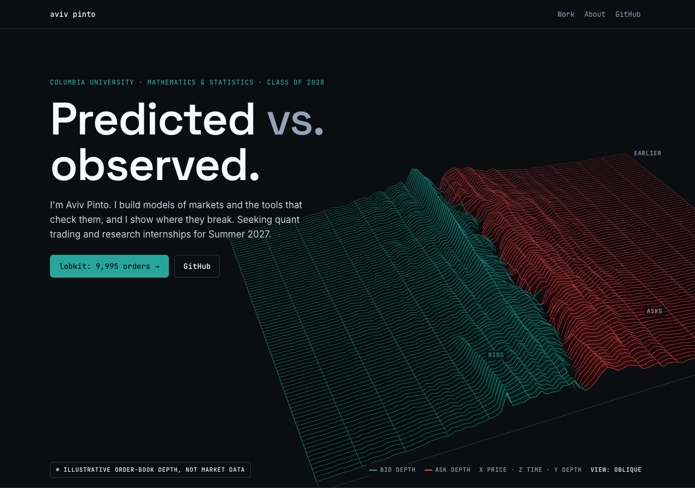

1 · 3D hero
Order-book terrain
A hairline 3D order book, bids teal and asks red, evolving live. Scrolling tilts it to a top-down depth heatmap.
- Feel
- Yuval's 3D, in your domain
- Weight
- 31 KB + three.js
- Effort
- M
Red for asks conflicts with the "red only for real negatives" rule.
Open →